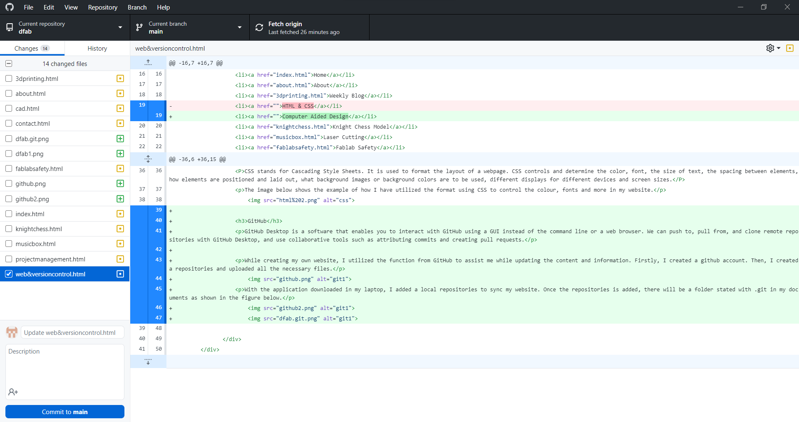
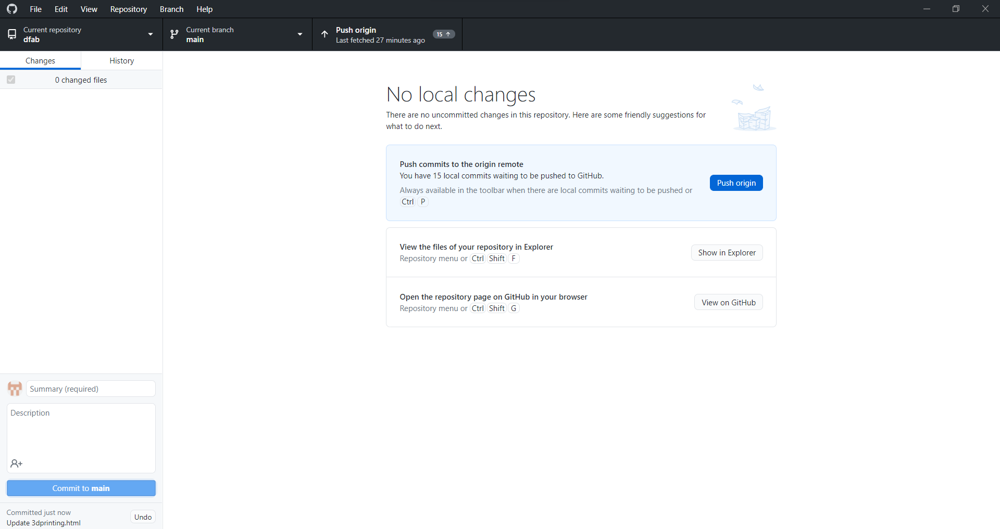

HTML
HTML stands for Hyper Text Markup Language and it is the standard mark up language for creating web pages. HTML contains a series of elements to describe the structure of a web page. HTML controls the browser and determine how contents are present.
I have utilized the knowledge learnt from the website to produce my first website.

CSS
CSS stands for Cascading Style Sheets. It is used to format the layout of a webpage. CSS controls and determine the color, font, the size of text, the spacing between elements, how elements are positioned and laid out, what background images or background colors are to be used, different displays for different devices and screen sizes.
The image below shows the example of how I have utilized the format using CSS to control the colour, fonts and more in my website.

GitHub
GitHub Desktop is a software that enables you to interact with GitHub using a GUI instead of the command line or a web browser. We can push to, pull from, and clone remote repositories with GitHub Desktop, and use collaborative tools such as attributing commits and creating pull requests.
While creating my own website, I utilized the function from GitHub to assist me while updating the content and information. Firstly, I created a github account. Then, I created a repositories and uploaded all the necessary files.
With the application downloaded in my laptop, I added a local repositories to sync my website. Once the repositories is added, there will be a folder stated with ".git" in my documents as shown in the figure below. When the folder dfab.git can be found in my document files. I can start editing my contents through Brackets in the html provided in the folder.
As all the contents are updated through Brackets, each of the edited html files are needed to be save accordingly and sync to GitHub Desktop.Once the application receives changes in the file, it will appear and we are required to select the respective files and commit the changes to main.
Once the all the changes are committed, we are needed to push the commits to the origin remote.
With the commits being pushed, the changes made will be edited in the website.